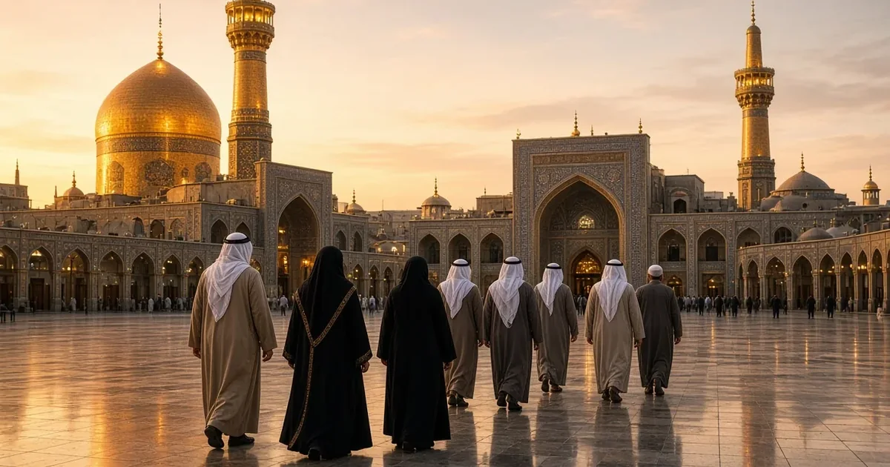

دليل الزائر العربي · الزائر العراقي إلى مشهد: كيف يخطط للدفع داخل إيران؟
البطاقة السياحية للزائر العراقي في إيران: ما الذي يجب معرفته؟
قبل أن تعتمد على وسيلة الدفع
قسّم ميزانيتك إلى نقد ضروري للطريق ومصروف محدود للطوارئ، ثم استفسر بعد الدخول النظامي إلى إيران عن البطاقة الريالية السياحية باسمك. لا تفترض أن البطاقة العراقية ستعمل على أجهزة الدفع المحلية، ولا تسلّم أموالاً أو جوازات لوسيط قبل معرفة الجهة المصدرة والشروط كتابةً.

دليل زائر العراق إلى مشهد حول النقد أثناء الطريق والبطاقة الريالية السياحية بعد الدخول، وشروط الإصدار والتحقق قبل الدفع.
افصل بين نقد الطريق وميزانية مشهد
إذا كنت قادماً من بغداد أو النجف أو كربلاء أو البصرة، فخطط أولاً للنفقات التي ستحتاجها في الطريق: الطعام والتنقل والاحتياجات الطارئة ورسوم الرحلة. لا تجعل كل ميزانية الأسرة مع شخص واحد، ولا تعرض رزمة النقد عند المعابر أو الاستراحات. تختلف احتياجات الوصول البري عن الرحلة الجوية، لكن قاعدة توزيع النقد واحدة.
بعد الدخول إلى إيران
بعد الدخول النظامي إلى إيران، يمكنك الاستفسار عن البطاقة الريالية السياحية. الأهلية لا تعتمد على الجنسية وحدها؛ يشترط في المسار المعلن أن يكون المتقدم أجنبياً غير مقيم، وعمره أكثر من ١٨ عاماً، ويحمل جوازاً سارياً وتأشيرة سارية أو يدخل دون تأشيرة مع ختم دخول ساري المدة. يمكن للمستحق الحصول على ما يصل إلى بطاقتين، ويبلغ الحد الأقصى المعلن للشحن ما يعادل ٥٠٠٠ يورو في كل عملية شحن. تحقق من توفر الخدمة في مشهد ومن الرسوم وطريقة الاسترداد قبل الاعتماد عليها.
إذا كانت الزيارة للعلاج
قبل الذهاب إلى مستشفى أو عيادة، اسأل المنشأة مباشرة عن طريقة الدفع المقبولة، وما إذا كانت البطاقة المحلية مناسبة للفواتير التي ستدفعها. لا تفترض أن البطاقة مقبولة لدى جميع الأقسام أو أنها بديل للتحويل الذي تطلبه المنشأة. راجع أيضاً دليل السياحة العلاجية في مشهد وجهّز التقارير الطبية عبر قناة المنشأة نفسها.
تنسيق الوصول والإقامة
يمكنك ترتيب الاستقبال أو الإقامة والتنقل بصورة منفصلة عن موضوع البطاقة. راجع دليل السفر من العراق إلى مشهد والوصول من المطار ومقارنة الفنادق قرب الحرم. لا تعتبر رسالة واتساب تأكيد حجز؛ يجب تثبيت التوفر والتكلفة ونطاق الخدمة كتابةً.
بيانات الاستفسار الأولي
للاستفسار عن البطاقة، اذكر مدينة المغادرة، وطريقة الوصول، وموعد الدخول، وموعد المغادرة، وعدد البالغين الذين يريدون بطاقة بأسمائهم. لا ترسل صورة الجواز أو المبلغ إلى وسيط قبل أن تعرف الجهة المرخصة التي ستتعامل معها.
مرجع رسمي لشروط البطاقة
راجع بيان البنك المركزي الإيراني عن البطاقة الريالية السياحية للتحقق من الشروط وحدود الشحن وآلية الاسترداد المعلنة.
الأسئلة الشائعة
هل تعمل البطاقة المصرفية العراقية في مشهد؟
لا تعتمد على قبولها في شبكة الدفع المحلية الإيرانية؛ جهّز خطة نقدية وبدائل بعد الوصول.
هل يمكن إصدار البطاقة السياحية على الحدود؟
التوفر عند المعابر غير مضمون. اسأل الجهة المصدرة قبل السفر، وخطط لإتمام الإجراء في مشهد بعد الدخول إذا كان ذلك متاحاً.
هل يمكن إصدار بطاقة لكل فرد من العائلة؟
كل طلب يخضع لهوية صاحبه وشروط الأهلية والحد الأقصى المعلن. لا تفترض أن بطاقة شخص واحد تمثل بقية أفراد الأسرة.
هل يجب حمل كل ميزانية الرحلة نقداً؟
لا تحمل كامل المبلغ في مكان واحد. قسّم النقد وراجع خيار البطاقة المحلية بعد التحقق من شروطها.
هل تحتاج إلى تنسيق محلي في مشهد؟
يمكنك إرسال استفسار باللغة العربية عن الإقامة أو التنقل أو المساعدة في فهم الإجراءات المحلية. حسين ليس جهة إصدار مالية أو شركة اتصالات، ولا يضمن قبول أي طلب؛ تُؤكد الخدمة والرسوم كتابةً قبل أي اتفاق.